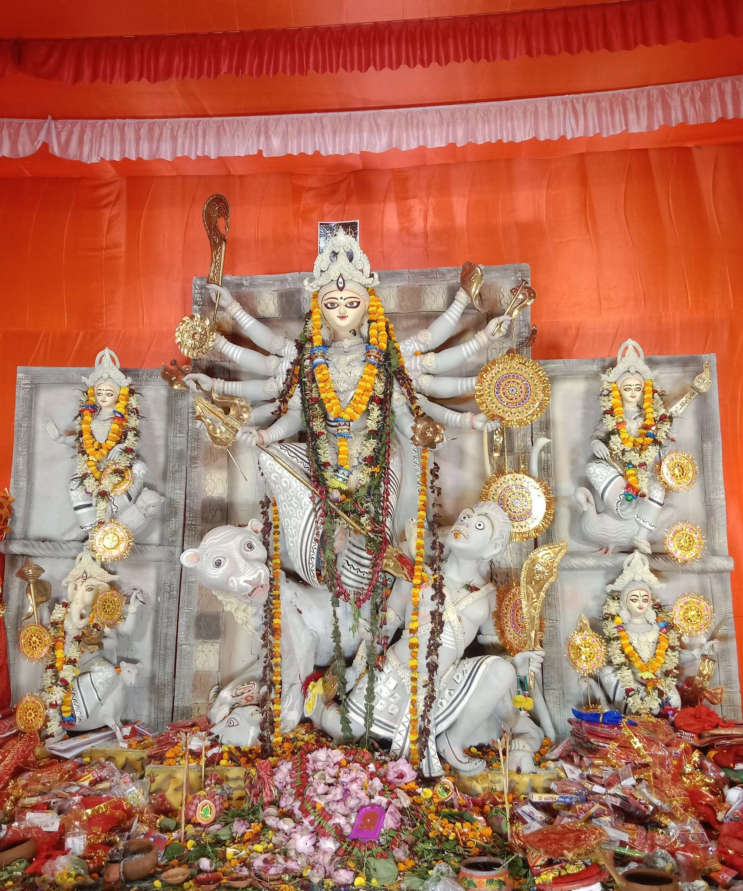
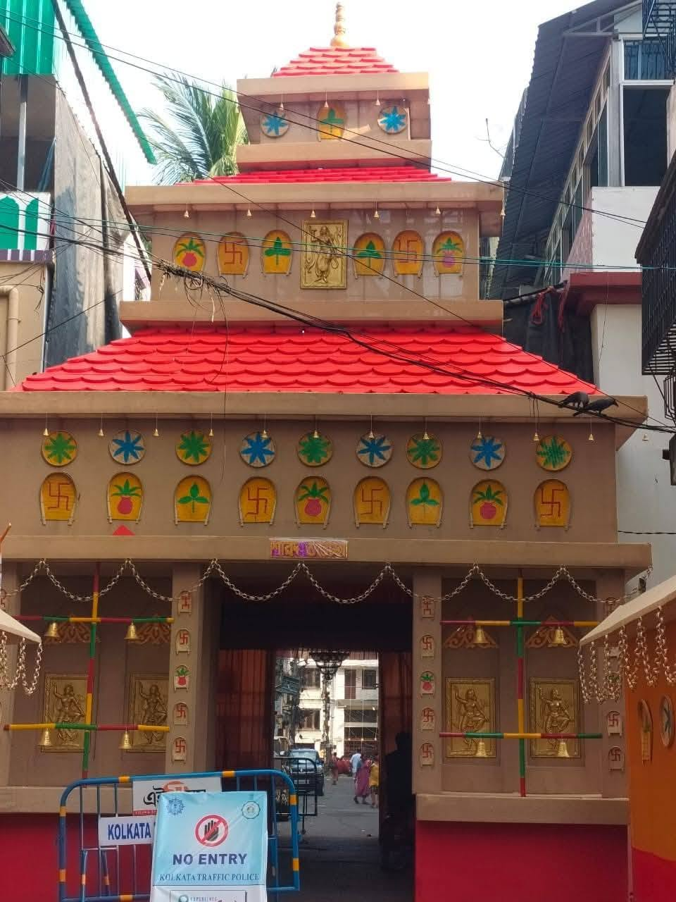
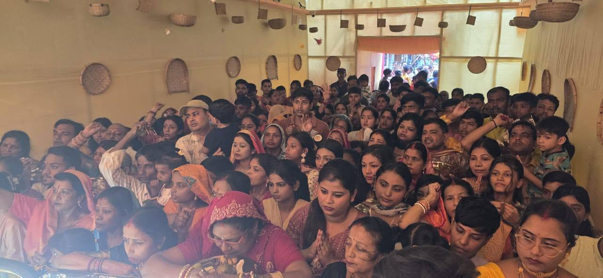
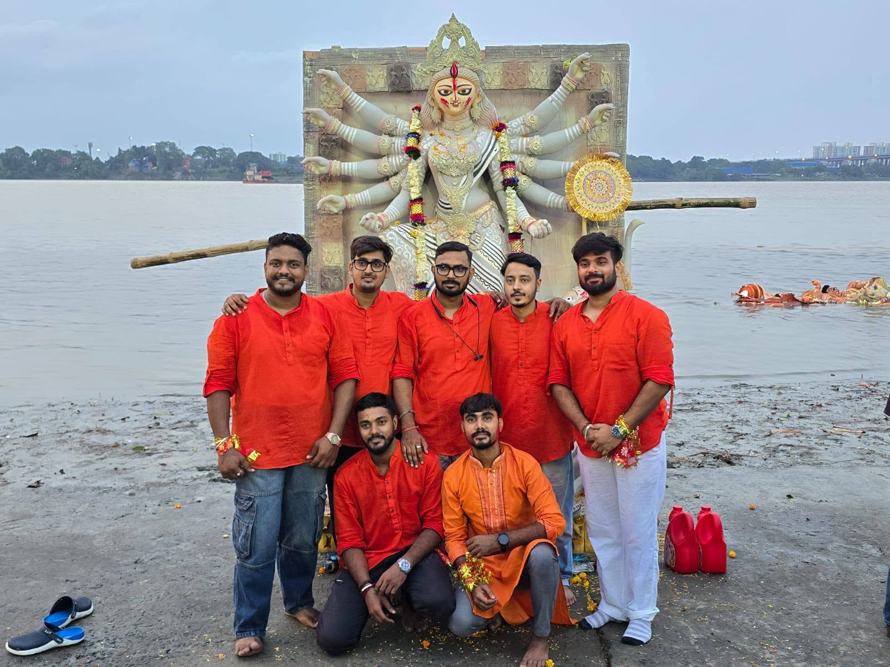

Traditional Puja Rituals
Daily rituals, anjali, arati, and blessings conducted with care and reverence.
Durga Puja Organizing Club
A proud community celebration of devotion, culture, and togetherness since 1972.
Bhukailash Sangh Sree brings people together every year to celebrate Durga Puja with devotion, discipline, and cultural pride. The club is built on respect for Bengali tradition and a warm welcome for every visitor.
From puja rituals and bhog distribution to cultural evenings and social initiatives, our work is guided by community participation and shared joy.
What began as a local Durga Puja initiative has grown into a respected community tradition. Elders, volunteers, families, and young members continue to carry the club forward with care and dedication.
Daily rituals, anjali, arati, and blessings conducted with care and reverence.
Music, dance, recitation, and local performances that celebrate Bengali culture.
Club activities shaped by service, inclusion, and responsibility toward the locality.

Durga Idol
Pandal
Anjali
VisarjanDurga Puja 2026 dates for Kolkata and West Bengal.
Evening rituals followed by a welcome gathering for members and guests.
Morning puja, anjali, bhog distribution, and community programs.
A devotional day with special rituals, bhog, and evening arati.
Traditional rituals and performances by local artists and children.
Farewell rituals, blessings, and a heartfelt closing of the celebration.
Add your full address, map link, contact number, and email here so visitors can reach the organizing committee easily.